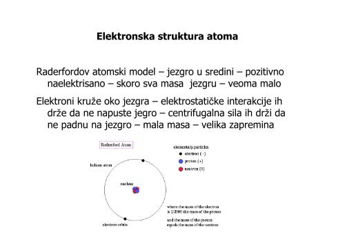

Atomi se sastoje iz jezgra i elektronskog omotača. Jezgo čine protoni i neutroni, Protoni su pozitivno naelektrisani.
Oni su nosioci najmanje (elementarne) količine pozitivnog naelektrisanja u prirodi. Neutroni nisu naelektrisani, elektroneutralni su.
Protoni i neutroni su sastavljeni od kvarkova. Po tri kvarka gradi ove dve vrste čestica. Od čega su sastavljeni kvarkovi ne znamo.
Po teoriji struna njih čine strune. Elektronski omotač čine elektroni. Elektroni su nosioci najmanje (elementarne) količine negativnog naelektrisanja u prirodi.
Oni se kreću po određenim putanjama, orbitalama ili energetskim nivoima oko jezgra atoma. Postoji 7 ovakvih putanja. Atom je elektroneutralan.
Elektroneutralnost atoma obezbeđuje isti broj protona i elektrona. Atomi jednog istog elementa su isti po broju protona i elektrona.Mogu da se razlikuju bo broju neutrona.
Atomi jednog istog elementa koji se razlikuju po broju neutrona u jezgru zovu se izotopi.

Za sada je otkriveno i ispitano 118 vrsta atoma.Atomi su nastali i nastaju u jezgrima zvezda i eksplozijama novih i supernovih.
Atom vodonika je najednostavniji, najstariji, prvonastali atom, najrasprostranjeniji u prirodi i najmnogobrojniji.Nalazi se u živim organizmima, zvezdama,
maglinama, galaksijama. Simbol atoma potiče od latinskog imena, a uz simbol obavezno se upisuje vrednost rednog i masenog broja. Redni broj je unikatni za odredjeni element.
Na primer ugljenik uvek ima redni broj 6, a to znači da atom ugljenika sadrži 6 protona! Taj broj protona ne može se promeniti hemijskim reakcijama.
Dokle god je redni broj 6 radi se o atomu ugljenika. Ukoliko se redni broj promeni dobija se atom nekog drugog elementa, a to je nuklearna reakcija.